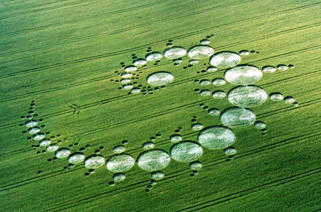
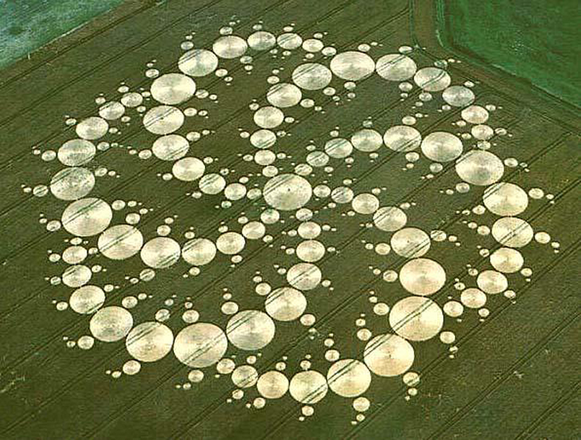
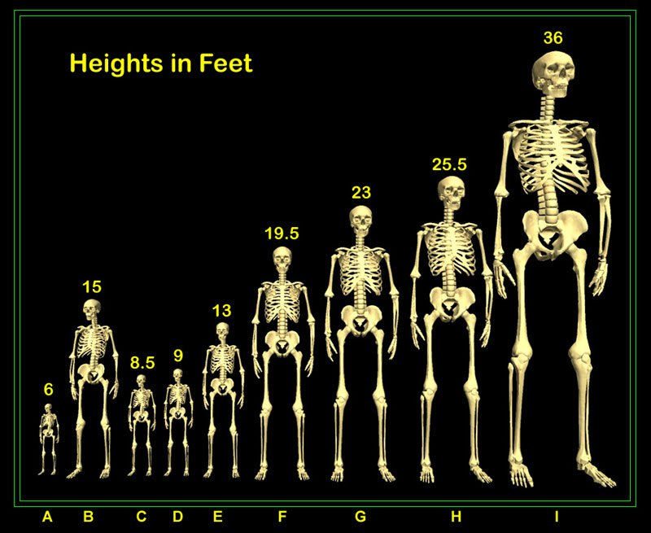
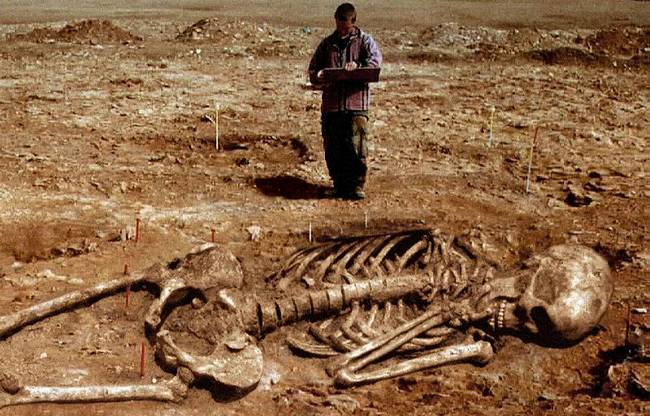
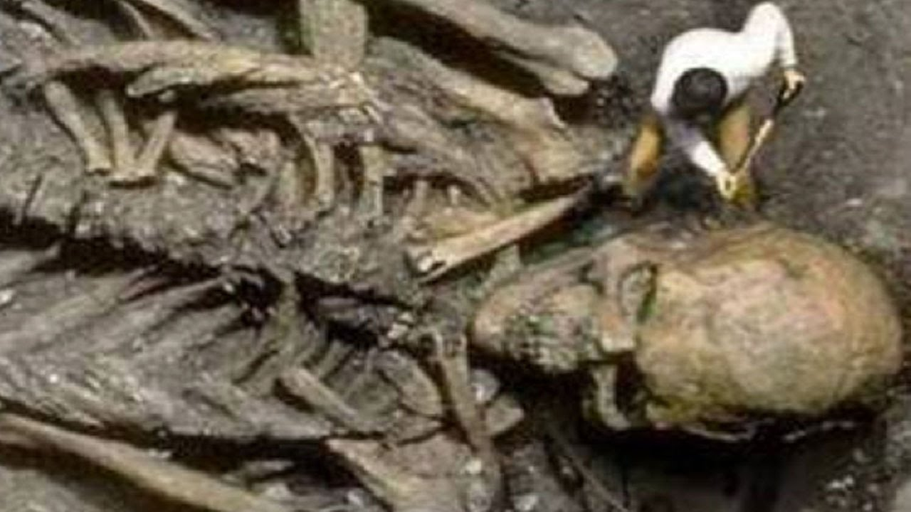
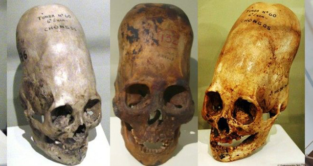

Există extratereștri? Nu putem spune cu exactitate. Putem face doar presupuneri în lipsa unor dovezi palpabile. Totuși există anumite situații de pe planeta care ridică mari semne de întrebare: desenele din lanurile de grâu din Marea Britanie de o inteligență ieșită din comun care reprezintă simboluri din geometria sacră, existența piramidelor, craniile alungite din Egipt și cadavrale umanoide de zeci de metri pe care Arheologia nu și le poate explica etc.
Voi prezenta pe scurt cateva date legate de premisa existenței extratereștrilor.






Interviu cu ofițerul NATO Bob Dean
În timpul războiului rece existau nave, așa numitele OZN, care au fost observate de mai multe ori pe ceruri de către piloții de avioane occidentale sau sovietice. Fiecare tabără presupunea că acele obiecte neidentificabile sunt ale inamicului. Așa că NATO a hotărât să facă o vastă investigație. În anul 1964 NATO a concluzionat într-un raport strict secret de 1000 de pagini că existau la acea dată 4 rase de extratereștri care vizitau planeta. Ofițerul NATO Bob Dean a avut acces la acel raport iar în 2012 a făcut dezvăluiri despre acesta. Din cele 4 rase de extratereștri, 2 erau umanoide, 1 reptiliană și 1 numita micii cenusii. La ora actuala Bob Dean dezvăluie că NATO cunoaște aproximativ 60 de rase de extratereștri care viziteaza planeta. Bob Dean subliniază nu doar că nu suntem singuri dar că nu am fost niciodată.
Interviu cu un iluminat
Din conversațiile lui Jan Udo Holey cu un Illuminati reiese ca omenirea are contacte serioase cu civilizațiile extraterestre. Illuminatul afirmă că omenirea oferă extratereștrilor ce au ei nevoie în schimbul tehnologiei. Altfel cum s-ar putea explica avansul tehnologic copleșitor din anii 50 până în prezent. Mai jos este redat o parte din interviu. Restul interviului se regăsește în cartea "Să nu atingi această carte" de Jan Van Helsing.
[...]Aşa cum aţi descris dumneavoastră înşivă în cărţile pe care le-aţi publicat, de altfel noi le cunoaştem pe toate, au existat culturi străine care ne-au vizitat planeta şi care fac aceasta în continuare. Iar noi ne-am asociat cu acestea. Ele au nevoie de ceva de pe planeta noastră, iar noi am primit în schimb tehnologie. Şi oamenii sunt surprinşi că din anii cincizeci începuse o revoluţie tehnică... Însă aceasta nu li se poate spune oamenilor - încă nu. Cu cine să discute şi să trateze pe pământ aceste fiinţe care ne vizitează, cu inteligenţă superioară? Cu un şeic arab sau poate cu un călugăr budist, care mai mult pluteşte, decât să fie cu picioarele pe pământ? Poate cu un turc din Anatolia, cu un mexican din ghetoul din Mexico-City, cu un italian din Sicilia ori cu un miner din regiunea Alpilor? Aceştia nu sunt reprezentând corespunzători pentru lumea noastră. Deja în anii cincizeci, în forurile noastre am avut reprezentanţi ai altor lumi, chiar şi în Pentagon, care ne-au susţinut ideea de a accelera formarea unui guvern mondial-prin ONU. Mijloacele pe care le folosim pentru a atinge acest obiectiv nu sunt întotdeauna cele mai oneste. Dar cine se opune acestora, pe aceia îl vom distruge. Viitorul omenirii se află în cosmos. Iar noi putem coopera cu popoarele din spaţiul cosmic numai dacă suntem O Lume. Atunci nu va mai fi voie să existe nici un război. De aceea, impunem lumii acest gen de guvern mondial cu care însă oamenii se vor obişnui. Am spus tuturor guvernelor din lume ce avem de gând şi că există două căi - sau participă sau vor fi obligate. Ţările care se opun vor avea parte de războaie. Ori acolo vom pune la cale o revoluţie sau le vom ruina economic. [...]
[...] Însă oamenii au totuşi libertatea să aleagă postul preferat. Noi nu avem numai programe care erodează spiritul, ci şi emisiuni de teatru şi concerte. Credeţi că am văzut vreodată vreun talk-show? Acesta este ceva pentru inferiorii inferiorilor. [...]
România este una din țările care s-a opus acestui plan ocult si a avut parte după cum spune Illuminatul de o revoluție și a fost ruinată economic. Ceaușescu s-a opus elitei oculte și a fost eliminat.
Iată că din păcate plopul a făcut mere si răchita a făcut micșunele.
Descoperirile făcute de cercetătorul David Wilcock
Întrucât nu pot rezuma în cuvinte impactul informațiilor din urmatorul documentar voi lăsa link-ul catre acesta pentru a fi vizionat de fiecare cititor in parte.
Așadar, nu pot spune cu certitudine dacă extratereștrii există sau nu. Eu tind să cred că ar exista. Nu știu în ce manieră sau în ce formă. Tema m-a făcut să cercetez mult. Există extratereștri? Întrebarea rămâne deschisă.